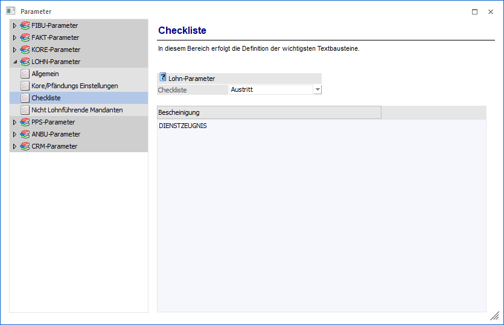

Im Bereich Checklisten kann definiert werden, welche Textbausteine optional bei Checklisten zur Anwendung kommen sollen.
Eingabefelder
Ø Checkliste
Aus der Auswahllistbox kann der Typ der Checkliste ausgewählt werden, für die die gewünschten Textbausteine hinterlegt werden sollen. Derzeit stehen hier nur die Optionen "Austritt" und "Eintritt" zur Verfügung.
Ø Bescheinigung
In der Tabelle können beliebig viele Textbausteine hinterlegt werden, die in weiterer Folge bei den Checklisten auch abgearbeitet werden können. Durch Drücken der F9-Taste kann nach allen vorhandenen LOHN-Textbausteinen gesucht werden.